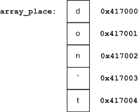
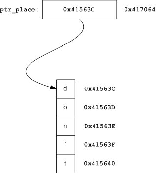

Short answer: no
Longer answer: it depends on what you mean by "equivalent". Pointer arithmetic and array indexing are equivalent. In other aspects, pointers and arrays are different.
Here's an example displaying the equivalence:
#include <stdio.h>
int main()
{
char arr[] = "don't panic\n";
char* ptr = arr;
printf("%c %c\n", arr[4], ptr[4]);
printf("%c %c\n", *(arr+2), *(ptr+2));
return 0;
}
The output is, of course:
t t
n n
Note that indexing works on both arrays and pointers. Similarly, pointer arithmetic works on both arrays and pointers.
So how are they different?
In a very important and fundamental way. Consider this code snippet:
char array_place[100] = "don't panic";
char* ptr_place = "don't panic";
int main()
{
char a = array_place[7];
char b = ptr_place[7];
return 0;
}
What exactly happens in the assignment to a, and how is it different from the assignment to b? It's informative to take a look at the disassembly (taken from Visual C++ 2005 on an x86 machine running Windows XP):
char a = array_place[7];
0041137E mov al,byte ptr [_array_place+7 (417007h)]
00411383 mov byte ptr [a],al
char b = ptr_place[7];
00411386 mov eax,dword ptr [_ptr_place (417064h)]
0041138B mov cl,byte ptr [eax+7]
0041138E mov byte ptr [b],cl
The semantics of arrays in C dictate that the array name is the address of the first element of the array. Hence in the assignment to a, the 8th character of the array is taken by offsetting the value of array_place by 7, and moving the contents pointed to by the resulting address into the al register, and later into a.
On the other hand, the semantics of pointers are quite different. A pointer is just a regular variable that happens to hold the address of another variable inside. Therefore, to actually compute the offset of the 8th character of the string, the CPU will first copy the value of the pointer into a register and only then increment it. This takes another instruction [1].
A graphical explanation
This is a graphical explanation:
The rightmost column is the memory addresses, and the boxes are the contents of memory cells. The first few letters of the string in array_place are displayed.
Note that array_place is simply a label (or an alias) to the memory address 0x417000. Therefore accessing array_place[7] is simply accessing memory address 0x417007. Therefore, as we can see in the disassembly, the compiler just replaces array_place[7] by 0x417007 - no address computation has to be done by the assembly it generates.
With a pointer, this works differently:
ptr_place is just a variable that contains an address inside [2]. This is the address to the first byte of the string that sits in another memory location. Compare this to the disassembly listing of the access to pointer_place[7] - it becomes clear why the compiler generates that code.
Variable names in C are just labels
This point is frequently ignored by programmers who don't actually hack on compilers. A variable in C is just a convenient, alphanumeric pseudonym of a memory location. Were we writing assembly code, we would just create a label in some memory location and then access this label instead of always hard-coding the memory value - and this is what the compiler does.
Well, actually the address is not hard-coded in an absolute way because of loading and relocation issues, but for the sake of this discussion we don't have to get into these details.
A label is something the compiler assigns at compile time. From here the great difference between arrays and pointers in C stems. And this is also why...
Arrays passed to functions are converted to pointers
Here's a snippet:
void foo(char arr_arg[], char* ptr_arg)
{
char a = arr_arg[7];
char b = ptr_arg[7];
}
Quiz: how are the accesses to a and b different here?
Answer: they're not!
char a = arr_arg[7];
00412DCE mov eax,dword ptr [arr_arg]
00412DD1 mov cl,byte ptr [eax+7]
00412DD4 mov byte ptr [a],cl
char b = ptr_arg[7];
00412DD7 mov eax,dword ptr [ptr_arg]
00412DDA mov cl,byte ptr [eax+7]
00412DDD mov byte ptr [b],cl
This happens because arrays passed into functions are always converted into pointers. The argument declaration char arr_place[] is just syntactic sugar for char* arr_place [3].
Here's a quote from K&R2:
When an array name is passed to a function, what is passed is the location of the initial element. Within the called function, this argument is a local variable, and so an array name parameter is a pointer, that is, a variable containing an address.
If this seems strange, think again. Recall the diagrams of the previous section. The C compiler has no choice here, since an array name is a label it replaces at compile time with the address it represents. But a function isn't called at compile time, it's called at run time, where something should be placed on the stack to be considered as an argument. The compiler can't just treat array references inside a function as labels and replace them with addresses, because it has no idea what actual array will be passed in at run time.
This last point may be a bit convoluted, but it's not critical to the understanding of the article. You can just take it as a fact: arrays passed to functions are converted to pointers, end of story!
Does the difference affect me?
Yes.
One way is that arrays just can't be manipulated the way pointers can. Here's a quote from Expert C Programming:
There is one difference between an array name and a pointer that must be kept in mind. A pointer is a variable, so pa=a and pa++ are legal. But an array name is not a variable; constructions like a=pa and a++ are illegal.
Here's an example:
#include <stdio.h>
int main()
{
int i;
char array[] = "don't panic";
char* ptr = array;
/* array traversal */
for (i = 0; i < sizeof(array); ++i)
printf("%c ", array[i]);
printf("\n");
/* pointer traversal */
for (; *ptr; ++ptr)
printf("%c ", *ptr);
return 0;
}
Note how an array has to be indexed with another variable. A pointer, on the contrary, is just a variable that can be manipulated freely.
Another, more important, difference is actually a common C gotcha:
Suppose one file contains a global array:
char my_arr[256];
And soothed by the seeming equivalence between arrays and pointers, the programmer that wants to use it in another file mistakingly declares as:
extern char* my_arr;
When he tries to access some element of the array using this pointer, he will most likely get a segmentation fault or a fatal exception (the nomenclature depends on the OS). Understanding why this happens is left as an exercise to the reader [4].
References
The following sources were helpful in the preparation of this article:
- K&R2 - chapter 5
- Expert C Programming, by Van der Linden - chapters 4, 9 and 10
- The C FAQ, questions 6.1, 6.2, 6.3, 6.4, 6.10

| [1] | That's just because we're on x86, by the way. On a CPU with a richer set of addressing modes (like PDP-11), it could have been done in a single instruction. |
| [2] | Note that I drew a multi-byte memory cell for ptr_place. On my x86 32-bit machine, it actually takes 4 bytes with the least significant byte of the value in the lower address. |
| [3] | By the way, so is char arr_place[100]. The size makes no difference to the C compiler - it's still converted to a pointer. |
| [4] | Hint: look at the first assembly listing in this article. How will the element be accessed via the pointer? What's going to happen if it's not actually a pointer but an array? |